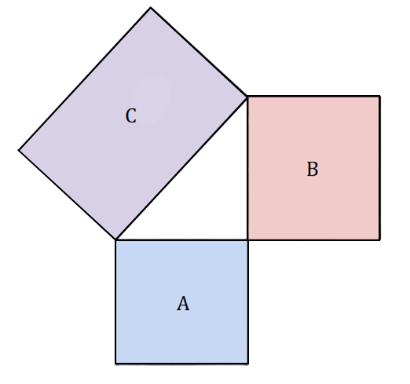
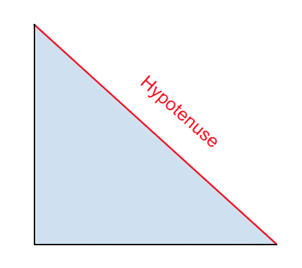
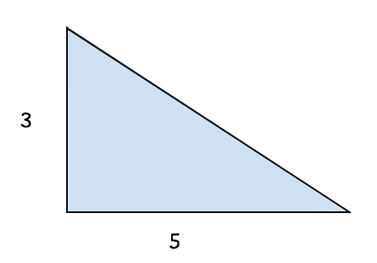

The Pythagorean Theorem is an equation that can help find the hypotenuse of a triangle…
The theorem itself can also be shown geometrically as squares...

The hypotenuse of a right triangle is the longest side…

The hypotenuse’s length is the root of c2 in the Pythagorean Theorem.
The first example of the pythagorean theorem is a triangle with a length of 5 and with a width of 3…

A is the smallest side of the triangle which is three in this example.
B is the longer side relative to A but not bigger than the hypotenuse (c)...
Using the pythagorean theorem formula…
We would have to square root both c and 34 to get the actual length of the hypotenuse…
The length of the hypotenuse is the square root of 34…
But what if the hypotenuse and one of the sides are known…
The unknown side of this triangle is approximately 5.656 or the square root of 32…